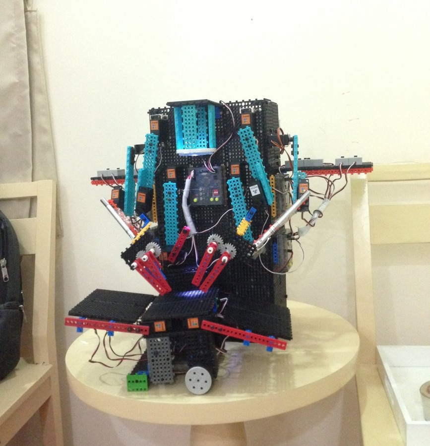
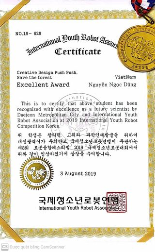

The common thread is turning goodwill into systems.
I'm a final-year IT student at RMIT Vietnam, majoring in Enterprise Systems Development and working as a Business Analyst. Over the past six years I've built a consistent record of leadership — robotics team captain, AI project mentor, club executive, student ambassador — while holding a GPA in the top 1% of my program. The common thread is turning operations that run on people and goodwill into systems that hold up without them.
My background pulls from two directions that turn out to be one skill. Competitive robotics taught me to design, program and debug something that has to work on the day, in front of judges, with no second try. Business analysis taught me to do the same thing for software — find the real requirement under the stated one, make it visible, and prove it works before it ships. I'm most useful where those meet: a team that needs a plan, a plan that needs a system, and a system that needs someone to check it actually solves the problem.
I'm looking for graduate and early-career roles in business analysis, enterprise systems, and technical project delivery — in Vietnam or remote.
- Business Analysis
- Enterprise Systems
- Agile Delivery (Scrum)
- QA & UAT
- Requirements Engineering
- Technical Mentoring
- Name
- June Nguyen (Nguyen Ngoc Dung)
- Program
- Bachelor of Information Technology, Major in Enterprise Systems Development
- Institution
- RMIT University Vietnam
- Based in
- Hanoi, Vietnam
 images/about_me.jpg
images/about_me.jpg
My degree moved me from writing code to specifying it.
Enterprise Systems Development is less about a language and more about the seams — where a sales channel meets a warehouse, where a requirement meets a test case — which is exactly the work I do now as a BA.
I started in Mechatronics at QUT in Australia [TODO: dates] before transferring home to RMIT. The detour wasn't wasted: a year of hands-on jobs and a hardware degree gave me a feel for how a system behaves when the neat diagram meets a real user.
RMIT University Vietnam
Bachelor of Information Technology, Major: Enterprise Systems Development.
Queensland University of Technology
Bachelor of Engineering (Mechatronics). Transferred to RMIT.
“[TODO: 1–2 sentences from an RMIT lecturer — analytical ability, ownership, ability to lead peers.]” — [Name, Title, RMIT Vietnam]
Six years of competitive robotics, in the order they happened — not a trophy shelf, but where I learned to build under a deadline and lead a team that has to perform on cue.
2018 — two national golds, the same job done twice.
Robotacon is Vietnam's premier educational robotics tournament. In 2018 I led my team to first place in the Hanoi regional round as the mechanical-design lead, then won first prize again at IYRC Vietnam later that year as lead programmer for the autonomous line-trace routine. Two nationals, two golds, the same job done twice — design the thing, then make it run itself.
.jpg) robotacon_2018_main1.jpg
robotacon_2018_main1.jpg.jpg) iyrc_2018_main2.jpg
iyrc_2018_main2.jpg 2018_add1.jpg
2018_add1.jpg
2018_add3.jpg2019–2020 — representing Vietnam in Seoul, twice.
Selected for the Vietnam national team in 2019, I competed in Seoul against representatives from more than twenty countries and we took the Excellent Award. I went back in 2020 and we moved up — Silver Prize, second overall, the second-highest honour — under pandemic-era constraints that cut our build and travel time [TODO: confirm].
 korea_2019_main1.jpg
korea_2019_main1.jpg korea_2020_main2.jpg
korea_2020_main2.jpg
korea_add1.jpgFrom contestant, year by year.
3rd Prize, Robotacon · IYRC Malaysia representative.
1st Prize Robotacon Hanoi · 1st Prize IYRC Vietnam.
Vietnam national team, Seoul — Excellent Award · MakeX finalist.
Seoul — Silver (2nd) · TechGenius finalist.
AVSC Top 10.
Everything after this — mentoring, BA work, running a floor of 200 volunteers — is the same loop: scope it, build it, test it before it counts.
2022 — a deliberate year on the other side of the counter.
I finished high school with a plan to study Mechatronics in Australia. What I didn't have was much exposure to how people outside the robotics bubble actually live, so I made a choice: spend a year in Australia doing ordinary jobs. Not for the money — to stand on the other side of the counter.
 pivot_2022_main.jpg
pivot_2022_main.jpgCar-wash attendant, kitchen hand, dishwasher.
Those jobs put you face to face with customers in their most ordinary moments, which is where you actually learn what people want and how it feels to be the one serving them.
 handy_jobs_1.jpg
handy_jobs_1.jpgUNIQLO Australia — a shop as a small society.
I learned how a shop works as a small society — rosters, standards, the difference a floor leader makes. My manager cheered the team on and was first to take responsibility when we got something wrong. I've run teams that way ever since.
 uniqlo_1.jpg
uniqlo_1.jpg uniqlo_2.jpg
uniqlo_2.jpg uniqlo_3.jpg
uniqlo_3.jpg uniqlo_4.jpg
uniqlo_4.jpgA former teacher asked me to “check out” a robotics competition for two weeks. That branch never got merged back — it's still running, three seasons and twelve teams later, and it's the most sustained commitment I've made.
2023 — a two-week favour that didn't end.
Invited by a former teacher who'd moved to Edison An Khanh, whose school was entering the VEX IQ Robotics Competition and needed someone to scope it. The two-week sprint turned into three full seasons: twelve teams, and a coaching role I still hold.
 edison_2023_main.jpg
edison_2023_main.jpg edison_2023_add1.jpg
edison_2023_add1.jpg edison_2023_add2.jpg
edison_2023_add2.jpg edison_2023_add3.jpg
edison_2023_add3.jpg edison_2023_add4.jpg
edison_2023_add4.jpg2024 — four teams, six awards, one breakthrough season.
- Coached 4 VEX IQ teams through a full competitive season.
- Delivered 6 competition awards across the four teams [TODO: name them].
- Won the program's Mentor of the Year award.
- Featured in RMIT SSET's spotlight article “From contestant to mentor”, and a Mentor of the Year video on LinkedIn.
 edison_2024_add1.jpg
edison_2024_add1.jpg edison_2024_add2.jpg
edison_2024_add2.jpg edison_2024_add3.jpg
edison_2024_add3.jpg edison_2024_add4.jpg
edison_2024_add4.jpgMentor of the Year
 mentor_award_1.jpg
mentor_award_1.jpg mentor_award_2.jpg
mentor_award_2.jpg2025 — new teams, deeper into code.
- Took on 4 completely new VEX IQ teams, shifting emphasis to autonomous programming and team-spirit development.
- The season produced the program's first-ever Think Award, plus two Spirit Awards.
 edison_2025_add1.jpg
edison_2025_add1.jpg edison_2025_add2.jpg
edison_2025_add2.jpg edison_2025_add3.jpg
edison_2025_add3.jpg edison_2025_add4.jpg
edison_2025_add4.jpg2025–2026 — from robotics into AI mentoring.
I mentored two student groups for Editech: an AI system for early autism detection, which took 1st Prize, and an AI pipeline for filtering toxic online content, which took 3rd Prize. Same mentoring loop as robotics — help them scope the problem, pick a method they can defend, and show it works — applied to models instead of motors.
 ai_add1.jpg
ai_add1.jpg ai_add2.jpg
ai_add2.jpg ai_add3.jpg
ai_add3.jpg ai_add4.jpg
ai_add4.jpgIn first year I decided to step out of the comfort zone deliberately. Two roles — Student Ambassadors Team and Student Council — pulled my network wider than I thought it could go.
Most opportunities arrive through a person, not a posting.
I joined the Student Ambassadors Team (SAT) and the Student Council. From just those two, my circle grew past anything I'd planned for — and I learned that most opportunities arrive through a person, not a posting.
 nerdy_add1.jpg
nerdy_add1.jpg nerdy_add2.jpg
nerdy_add2.jpg nerdy_add3.jpg
nerdy_add3.jpg nerdy_add4.jpg
nerdy_add4.jpgTwo clubs, two roles, one thread.
HR Executive Assistant at IEC — looking after the people inside the organisation. External Affairs at BUFI — connecting the organisation to the world outside it. I want to keep getting better at both halves at once.
 clubs_main1.jpg
clubs_main1.jpg clubs_main2.jpg
clubs_main2.jpgITSE Ambassador & Future Tech Camp Facilitator.
- Represented the IT & Software Engineering programs to prospective students and families.
- Supported workshop sessions in Python, AI/ML fundamentals, Arduino robotics, and game development.
- Guided 3 student teams — all 3 took top awards [TODO: which event].
 sset_main.jpg
sset_main.jpgBuilding under pressure — hackathons.
Hackathons force a working build in 24 to 48 hours. Each one has tightened my ability to lead a team through a problem with no textbook answer — decide fast, cut scope honestly, ship something that runs.
 hackathon_game1.jpg
hackathon_game1.jpg hackathon_game2.jpg
hackathon_game2.jpg hackathon_game3.jpg
hackathon_game3.jpgTapXanh — a policy problem turned into a funded plan.
Led the design of an incentive-based public-transport solution: a 5-year strategic plan funded 80% government / 20% private equity, delivered as a 4-minute pitch that scored strongly for clarity and local relevance.
 tapxanh_1.jpg
tapxanh_1.jpg tapxanh_2.jpg
tapxanh_2.jpg tapxanh_3.jpg
tapxanh_3.jpg tapxanh_4.jpg
tapxanh_4.jpgPerfect Pitch — 2025 for exposure, 2026 sharper.
First tryout in 2025 was deliberate exposure — get on the stage, learn the format. I came back in 2026 sharper [TODO: result / placement].
 pp2025_main1.jpg
pp2025_main1.jpg pp2026_main1.jpg
pp2026_main1.jpgGenesis Escape — reading a room in real time.
As a Game Master I learned to read emotion in real time — when a customer is frustrated or genuinely scared — while playing the NPC, controlling the game's pace, and steering the room's mood at once. It's a very specific kind of leadership training.
 genesis_1.jpg
genesis_1.jpg genesis_2.jpg
genesis_2.jpgFPT IS — Project Coordinator Intern.
Coordinated 200+ daily Scrum sync-ups between bank clients (HDBank, MB, Vietcombank) and offshore delivery teams; cut meeting duration by 60–75% and measurably sped up blocker removal.
The challenge
Daily Scrum sync-ups between bank clients (HDBank, MB, Vietcombank) and offshore delivery teams were running long and slowing decisions.
My role
- Coordinated 200+ of these sync-ups end to end.
- Owned the agenda, the blocker list, and the follow-ups.
- Held the line on time-boxing across time zones.
Approach
- Pre-collected blockers before each call.
- Time-boxed every agenda item.
- Pushed decisions to the owner in the room rather than parking them.
Findings
- Meeting duration fell by 60–75%.
- Blocker removal and decision-making measurably sped up [TODO: any hard figure].
Recommendation
Recommended the pre-collected-blocker format become the standard for cross-timezone delivery syncs, with a named decision owner on every item.
Impact
Delivered a repeatable meeting format that shortened a recurring 200+-instance ceremony and moved decisions closer to the people accountable for them.
Evidence
[TODO: 2–4 captioned screenshots — agenda template, blocker tracker, before/after duration chart.]
Capabilities demonstrated
- Facilitation: ran high-frequency ceremonies without losing momentum.
- Ownership: converted a vague standing meeting into a measured process.
Skills acquired
- Stakeholder coordination
- Agile ceremonies
- Cross-timezone delivery
BSS Commerce — Business Analyst.
Authored requirement documentation, drove feature visualisation, and led UAT validation — reaching a 95% UAT pass rate per feature and cutting post-release hotfixes by 40%.
The challenge
Features were reaching release with requirement gaps that surfaced as post-release hotfixes.
My role
- Authored requirement documentation for [TODO: product / team].
- Drove feature visualisation with stakeholders and engineers.
- Led UAT validation before each release.
Approach
- Traced each stated request back to the underlying requirement.
- Built a UAT pass/fail checklist per feature against acceptance criteria.
- Ran a market-research study alongside the delivery work.
Findings
- Reached a 95% UAT pass rate per feature.
- Cut post-release hotfixes by 40%.
- Market-research study projected to lift monthly recurring revenue by 25%.
Recommendation
Recommended UAT sign-off against a written checklist become a release gate, and the market-research findings feed the next quarter's roadmap.
Impact
Reframed release quality from reactive hotfixing to a measured gate, and identified a revenue change worth a projected 25% MRR lift.
Evidence
[TODO: 2–4 captioned screenshots — requirement doc, UAT checklist, hotfix trend, market-research summary.]
Capabilities demonstrated
- Requirements engineering: found the real requirement under the stated one.
- Quality ownership: made "it works" provable before ship.
Skills acquired
- Requirements engineering
- UAT strategy
- Market research
- Feature specification
Three builds, each one the capability the next one needed.
“I can run a software project end to end.”
PRJ-01 · AI PRODUCT DELIVERY
MatureCare — AI Assistant Chatbot App
Oct 2025 – Jan 2026 · Project Manager (Scrum) & QA
Led Agile Scrum delivery for two software projects — sprint planning, stand-ups, retrospectives — and owned QA against acceptance criteria.
Scrum · SRS · Test cases · Backlog management
The challenge
Two student software projects needed to ship in parallel with no dedicated delivery lead and only acceptance criteria to steer by.
My role
- Owned Scrum delivery for both projects.
- Ran sprint planning, daily stand-ups, and retrospectives.
- Owned QA sign-off against acceptance criteria.
Approach
- Wrote the vision, SRS, product backlog, and acceptance criteria up front.
- Kept both backlogs on one cadence so context-switching stayed cheap.
- Tested each story against its acceptance criteria before calling it done.
Findings
- Held a 90%+ user-story acceptance rate per sprint.
- Both projects delivered on the same timeline without a slip.
Recommendation
Recommended the up-front SRS-plus-acceptance-criteria pack become the default kickoff artefact for student delivery teams.
Impact
Delivered two projects end to end and a reusable documentation template the next cohort could start from.
Evidence
[TODO: 2–4 captioned screenshots — backlog board, SRS excerpt, burndown, acceptance-criteria checklist.]
Capabilities demonstrated
- Delivery leadership: ran full Scrum cadence for parallel projects.
- Quality gate: tied "done" to written acceptance criteria.
Skills acquired
- Scrum facilitation
- SRS authoring
- Acceptance testing
“I can turn a policy problem into a funded plan.”
PRJ-02 · STRATEGY & PITCH
TapXanh — Public-Transport Green App
June 2025 · Global Leadership Experience
Designed an incentive-based public-transport solution and a 5-year rollout plan, pitched in four minutes.
Strategic planning · Financial modelling · Pitching
“I can build the tool that fixes the data.”
PRJ-03 · IT SUPPORT & TOOLING
Inventory Management & Price-Checking App
Sep 2023 – present · IT Support Specialist, Thuy Thailand Consumer Goods
Built a web-based inventory and price-checking app around a scanning workflow to stop manual-entry drift.
Web app · Barcode scanning workflow · Data reconciliation
Four tags worth pointing at.
Inspiring Leaders Award — RMIT Student Leadership Recognition, 2025
RMIT's award for students who've shown sustained, values-driven leadership across the university community.
Top 5 — RMIT Choice Awards
Voted into the top five [TODO: category] in RMIT's student-choice awards.
Dean's List Award
Recognised on the RMIT Dean's List for sustained academic performance — top 1% of GPA across the SSET program.
Welcoming the Australian Minister for Education
One of four students chosen from across all RMIT Vietnam faculties to formally welcome the Australian Minister for Education on an official visit to the Hanoi campus.
Let's build something.
Open to graduate and early-career roles in business analysis, enterprise systems, and technical delivery. I reply within 24 hours.
Phone
+84 865 949 604
Email
juneng2108@gmail.com
LinkedIn
ngoc-dung-nguyen-june
Based in Hanoi, Vietnam — open to remote.